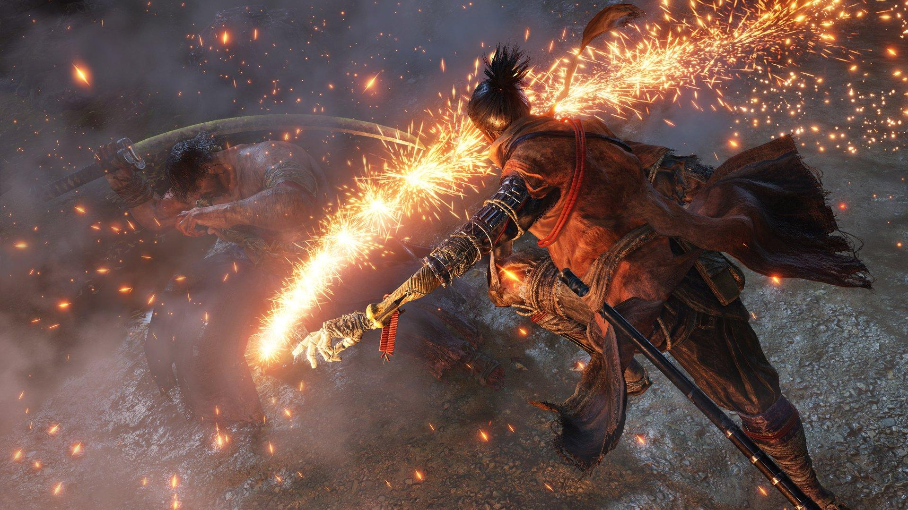
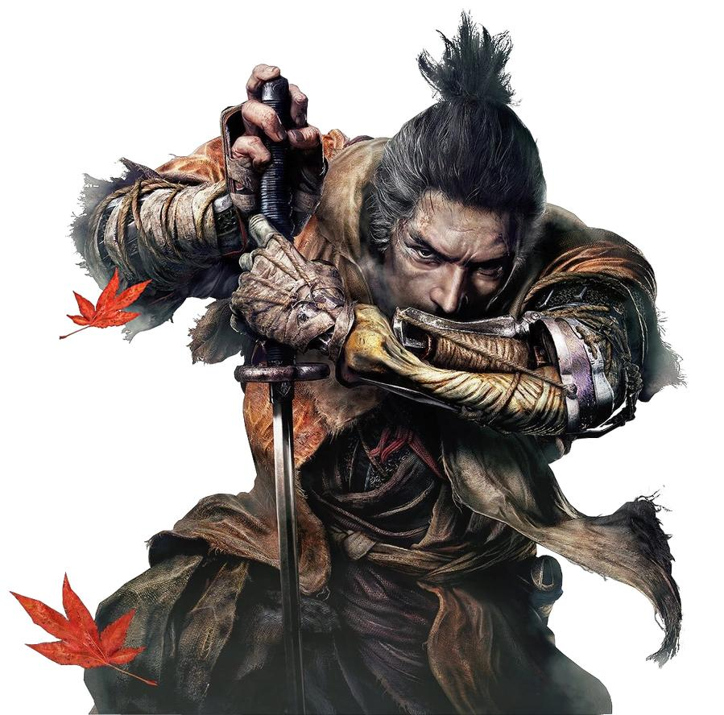
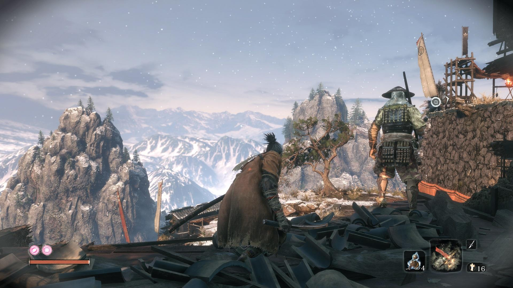
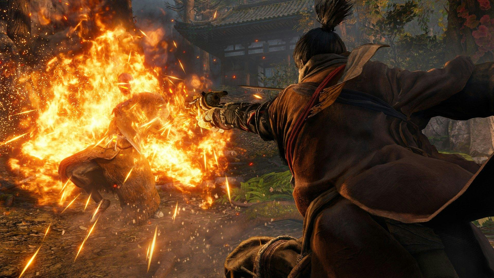

01 / 刀
ИСКУССТВО БОЯ
Точные парирования, разрушение концентрации противника и смертельные удары.
隻狼 — THE WAY OF THE SHINOBI
В эпоху бесконечных войн один воин должен защитить своего господина. Познай историю Волка, тайну бессмертия и судьбу великого клана Асина.
ОТКРЫТЬ ИСТОРИЮ ↗Приключение, в котором каждое сражение проверяет твою решимость.

THE ONE-ARMED WOLFДействие Sekiro: Shadows Die Twice происходит в вымышленной версии Японии эпохи Сэнгоку.
Главный герой — синоби по прозвищу Волк. Он поклялся защищать юного Куро, известного как Божественный наследник.
После потери руки Волк получает необычный протез и отправляется спасать своего господина. На его пути стоят могущественные воины и сверхъестественные существа.
Три главные составляющие легендарного приключения.

Точные парирования, разрушение концентрации противника и смертельные удары.

Незаметное передвижение, использование окружения и внезапные атаки.

Сюрикены, топор, огнемёт и другие инструменты для изменения тактики боя.
Путь синоби продолжается.
← НА ГЛАВНУЮ